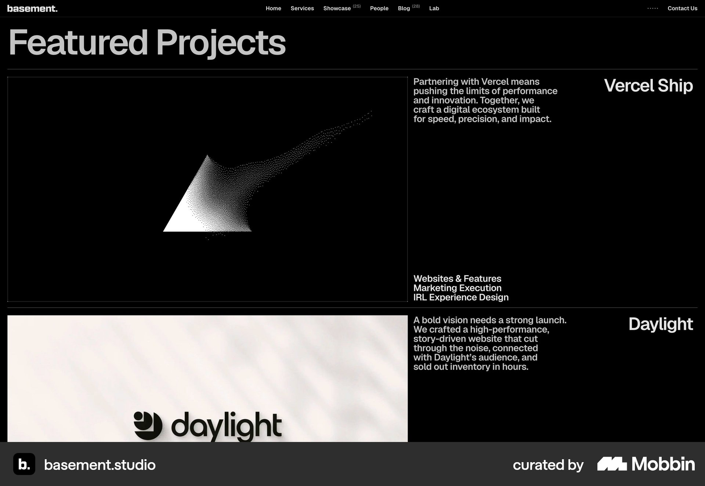

D01website section

basement.studio
Context beside large visuals
Large project images occupy the left region; descriptions and discipline labels sit beside them, with project names at the far edge.
Strengths, tradeoffs and Moriz application
Strength. Explains the contribution alongside the work.
Tradeoff. Wide separation can make image/text association harder; the copy is compact.
Moriz. Strong candidate for three projects: one substantial row per product, using supplied role and scope facts.